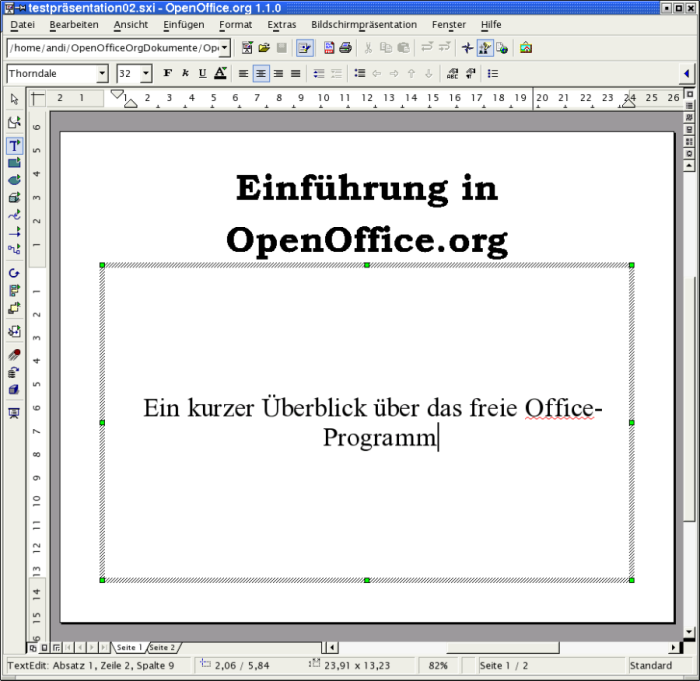
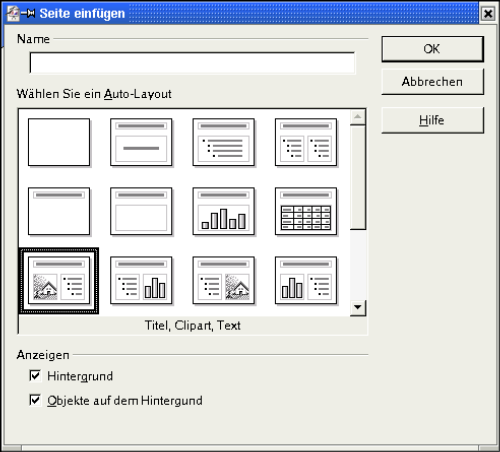
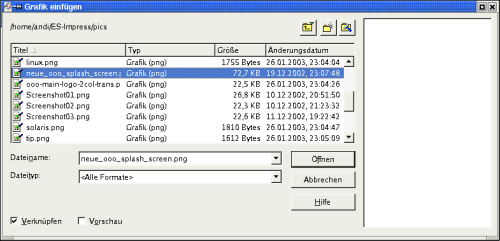
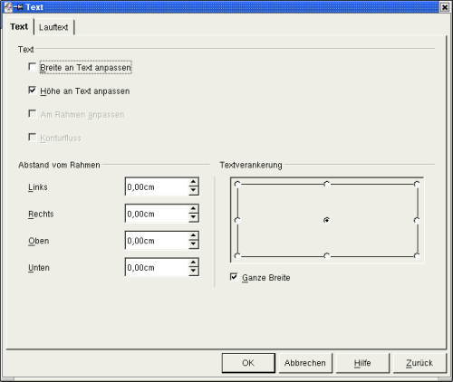
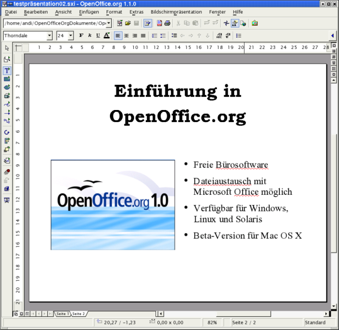
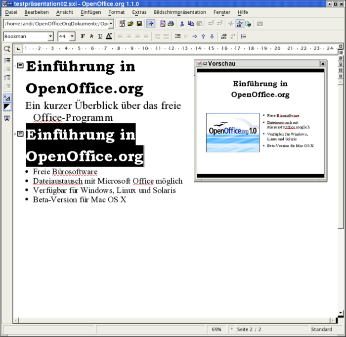
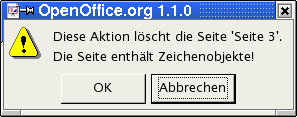

Erstellen der ersten Präsentation
Nach dieser kurzen Einführung in die Arbeitsumgebung von Impress fahren Sie mit Ihrer ersten Präsentation fort. Schalten Sie wieder zurück in die Zeichnungsansicht. Füllen Sie in das Titeldia aus dem ersten Teil eine Überschrift ein. Klicken Sie dazu in den oberen Textbereich („Titel durch Klicken hinzufügen“) und fügen Sie den Text Einführung in OpenOffice.org ein.
In den unteren Textbereich schreiben Sie Ein kurzer Überblick über das freie Office-Programm, nachdem Sie in diesen Bereich geklickt haben.
Abbildung 1: Titelseite mit eingefügtem Text
Fügen Sie Ihrer Präsentation eine neue Seite hinzu. Wählen Sie dazu aus dem Menü Einfügen den Befehl Seite aus. Es öffnet sich ein Dialogfeld, in dem Sie eine neue Seite selektieren können.
Entscheiden Sie sich für eine Seite mit Titel, Grafik und einem Aufzählungstextfeld („Titel, Clipart, Text“):
Abbildung 2: Dialog Seitenauswahl
Wenn Sie den Dialog mit „OK“ beendet haben, füllen Sie in das Titeltextfeld den Text von der ersten Seite ein.
In die untere linke Hälfte fügen Sie eine Grafik ein. Klicken Sie dazu doppelt in diesen Bereich. Wählen Sie im folgenden Dialog die einzufügende Grafik aus und bestätigen mit „Öffnen“. Der Dateidialog kann in Abhängigkeit von dem verwendeten Betriebssystem anders gestaltet sein.
Abbildung 3: Auswahl Grafik
Die untere rechte Hälfte verwenden Sie für eine Aufzählung:
Freies Office-Paket
Dateiaustausch mit Office-Programmen anderer Hersteller
Plattform unabhängig (Windows, Linux und Solaris)
Markieren Sie anschließend den Text in dem Aufzählungsfeld und rufen Sie das Kontextmenü auf (rechte Maustaste).
Abbildung 4: Dialogfenster Text
Wählen Sie dort „Text“ aus. Auf dem Karteireiter „Text“ können Sie rechts unten die Textverankerung von Verankerung „Oben“ auf „Mitte“ ändern.
Ihr Ergebnis sieht dann folgendermaßen aus:
Abbildung 5: Seite 2 mit Grafik und Texten
Bis jetzt haben Sie in der Zeichnungsansicht von OpenOffice.org Impress gearbeitet. Weiter oben haben Sie bereits die Symbolleiste für die anderen Ansichten kennen gelernt. Sie befinden sich oben rechts am Fensterrahmen. Wählen Sie das zweite Symbol von oben aus („Gliederungsansicht“). Die von Ihnen erstellten Seiten mit Ihren Texten und der zugehörigen Gliederung werden nun sichtbar:
Abbildung 6: Gliederungsansicht
In dieser Ansicht können Sie die Inhalte Ihrer Seiten/Folien kontrollieren. Sie können auch neue Gliederungsebenen einfügen sowie Inhalte auf die Folien besser verteilen.
Daher ist die Gliederungsebene besonders hilfreich bei der Planung und inhaltlichen Gestaltung Ihrer Präsentation.
Wenn das Vorschaufenster nicht bereits aktiviert ist, schalten Sie über das Menü Ansicht - Vorschau das Vorschau-Fenster ein.
Markieren Sie die erste Zeile der zweiten Folie und ersetzen Sie den Text durch „Vorteile von OpenOffice.org“. Im Vorschau-Fenster sehen Sie die Veränderung Ihrer Seite.
Gehen Sie nun an das Ende der letzten Zeile. Drücken Sie die Return-Taste und geben Sie dort den Text Portierung für weitere Betriebssysteme ein.
Auf ihrer zweiten Seite erscheint ein neuer Unterpunkt.
Setzen Sie den Mauszeiger hinter die Überschrift der zweiten Seite. Drücken Sie die Eingabetaste. Es erscheint eine neue Seite mit der Nummer 3. Die Gliederungspunkte werden auf die dritte Seite verschoben. Mit der Rücktaste können Sie die dritte Folie wieder löschen. Es erscheint folgender Nutzerdialog.
Abbildung 7: Nutzerdialog
Bestätigen Sie die Frage mit „OK“. Die Gliederungspunkte erscheinen wieder auf der zweiten Folie.
Wiederholen Sie das Erzeugen einer dritten Folie erneut. Drücken Sie nun die <Tab>-Taste und die neue Seite verschwindet ebenfalls wieder. Sie erhalten hier wieder den in der vorstehenden Grafik gezeigten Nutzerdialog, den Sie wieder mit „OK“ bestätigen müssen. Allerdings verbleibt noch ein neuer Gliederungspunkt am Beginn der zweiten Folie. Diesen können Sie mit der <Rücktaste> löschen.
|
|
Zur Erläuterung: Mit der <Tab>-Taste haben sie die zuvor erzeugte neue Seite drei um eine Ebene tiefer gestuft. Der Text, der dort als Überschrift eingegeben war (bzw. werden sollte), ist damit zum Gliederungspunkt auf Seite zwei herab gestuft worden. Probieren Sie dies aus, indem Sie wieder eine neue Seite drei erzeugen und nun einen beliebigen Text eingeben. Setzen Sie anschließend den Mauszeiger vor den gerade eingegebenen Text und drücken Sie die <Tab>-Taste. Setzen Sie als nächsten Schritt den Mauszeiger vor den Text einer Ihrer Gliederungspunkte von Seite zwei und betätigen Sie die Tastenkombination <SHIFT>+<Tab>. Ihr Gliederungstext wird zur Titelzeile auf einer neuen Seite drei. Mit dieser Tastenkombination stufen Sie also den entsprechenden Inhalt um eine Stufe höher. |
Wie Sie sehen, können Sie in der Gliederungsansicht sehr einfach die Gliederungspunkte Ihrer Präsentation zusammenstellen und die Aufteilung auf die einzelnen Seiten vornehmen.